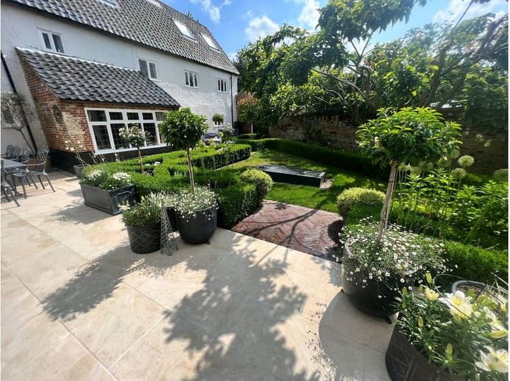
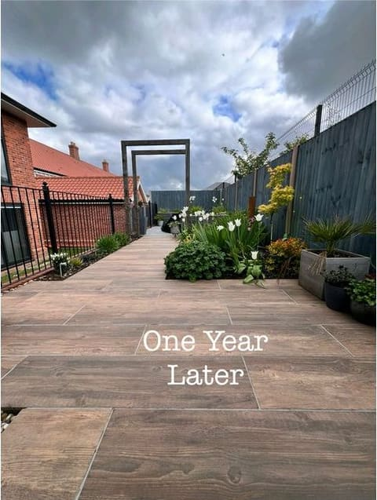
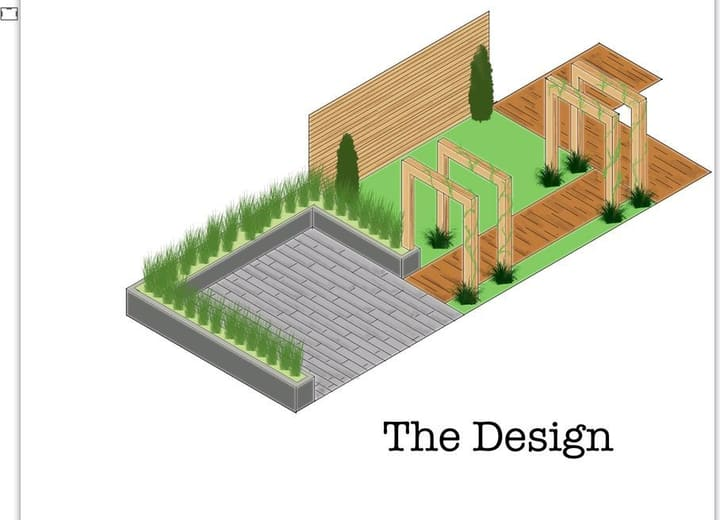

Garden design & build · Norfolk & Suffolk
We design it, we build it, and we plant it.
Designing and building Norfolk gardens since 1997. In-house CAD design, our own build teams, and one company from the first drawing to the final plant — so the garden still looks right in year five.
APL accredited BALI member TrustMark registered Fully insured

Our work
Gardens we’ve built
around Norwich
Every one of these was designed in-house, built by our own team, and planted as carefully as it was paved. Have a look, then tell us which bits you like.


Featured project
New-build garden, one year on
A bare new-build plot of turf and fence panels, and the same garden a year later — porcelain plank paving the full length, square timber arches, and borders that have filled in.
- WhereNorfolk
- MaterialsWood-effect porcelain planks, Square timber arches, Stained closeboard fence
- On siteAround 4 weeks

Cottage garden gin terrace
Wymondham, Norfolk
A wood-effect porcelain terrace in an old walled garden, wrapped in deep planting and set against an oak-framed garden room.

Low-maintenance modern garden
Norwich
Large-format grey porcelain, slate-faced raised beds and a horizontal cedar screen — a garden that still looks composed in February and asks very little of you.

Raised sandstone terrace
Norfolk
A raised buff sandstone terrace off the French doors, with brick-faced steps down to the lawn and reed screening for privacy.

Riven sandstone patio
Norfolk
Riven grey Indian sandstone in a random coursed pattern, with slate chippings, dark stained fencing and festoon lights running up to a garden shelter.
Or call Chris on 07387 085952 — he’ll talk it through, no charge.
What we do
Designed and built
by one team
Design and build is all we do. One team for the whole job — groundworks, hard landscaping and planting. No sub-contractors turning up unannounced, no gaps between trades.
Garden design
A measured survey, a scale CAD plan and a planting plan drawn in our own office, so you can see the whole garden before we build any of it.
More about garden design Hard landscapingPatios & paving
Natural stone, porcelain and block paving, laid on a proper sub-base so it stays flat and level.
More about patios & paving Hard landscapingDriveways
Block paved, gravel or resin-bound, with drainage and edging designed in from the start.
More about driveways Hard landscapingWalls, steps & retaining
Brick, block and rendered walls, retaining structures and steps — built to last, not just to look right on day one.
More about walls & steps StructuresDecking, fencing & gates
Timber and composite decks, cedar lath and closeboard fencing, screens for privacy and made-to-measure gates.
More about decking & fencing Planting & finishingPlanting, lawns & lighting
Beds and borders planned around your soil and light, fresh turf on properly prepared ground, low-voltage lighting and water features wired in as we build.
More about planting, lawns & lighting
You’ll see your garden
before we build it
- We measure the whole plot. Levels, drains, boundaries, the lot — so nothing surprises anyone halfway through.
- You get a proper CAD plan. Drawn to scale in our own office, so you can see exactly where the patio ends and the lawn starts.
- A planting plan, plant by plant. Named varieties chosen for your soil, your light and how much time you want to spend out there.
- Then a fixed written price. Itemised, in writing, before anybody lifts a spade.
How it works
Four steps, no surprises
Most people who call us have never had landscaping done before. Here is exactly what happens, in order.
- Step 01
You get in touch
Fill in the short form or ring us. We’ll call you back within one working day — and we’ll tell you straight away if your job isn’t one for us.
- Step 02
We come and look
We walk the garden with you, measure up, and talk about what you want out of it. Free, and there’s no sales pitch at the end of it.
- Step 03
Design & fixed price
You get a scale plan, a planting list, and an itemised written quote. Change your mind at this stage as often as you like — that’s what it’s for.
- Step 04
We build it, and hand it over properly
Our own team on site, tidied up each evening. At the end we walk round it with you and leave you the planting plan, so you know what every plant is and what it needs.
The person who turns up
You’ll deal with Chris,
start to finish
Chris now owns MN Landscapes, and he quotes every job himself. The person who walks round your garden and puts the price together is the person responsible for the work — and the one you ring if anything isn’t right.
A line here in Chris’s own words — why he does this, or what he won’t cut corners on. On a site like this it is the single most persuasive sentence on the page.
Reviews
What Norfolk customers say
Most of our work comes from people who’ve had us back, or who were told about us over the fence.
“We have used M & N Landscapes for many years. Professional, reliable, and they always do an excellent job. Years of knowledge, and nice people to work with.”
“Thank you for a great job. We are really pleased, and looking forward to the spring so we can watch it all start to happen!”
“All of the team were so helpful and polite the whole time they were working on our project.”
Get a free quote
Tell us about your garden
Four boxes and a couple of taps. We’ll ring you back within one working day, come and look for free, and put a fixed price in writing.
Enquiry sent
Thank you — that’s with us.
One of us will ring you within one working day to arrange a visit. If it’s urgent, call 07387 085952 and you’ll get us straight away.
Areas we cover
Norfolk, and over
the Suffolk border
Based near Wymondham, so most of these are a short drive. If you’re not on the list, ask anyway — we often are.
Norwich, Wymondham, Hethersett, Cringleford, Costessey, Taverham, Attleborough, Hingham, Mulbarton, Poringland, Long Stratton, Loddon, Diss, Dereham, Watton and the villages in between — plus Harleston, Bungay and Beccles over towards Suffolk.
Questions
The things people
ask us first
What does a new patio or garden cost?
It depends on the size, the materials and what’s underneath the existing ground — which is why we come and look before quoting. What we can promise is that the visit is free, the quote is itemised and in writing, and the price we agree is the price you pay unless you ask us to change something.
Do I have to have a design done?
No. If you know exactly what you want, we’ll price and build it. But for a whole garden, most people find the scale plan is what makes the decision easy — it’s much cheaper to change your mind on paper than on site.
How long will the work take?
A patio is usually a week or two. A full garden rebuild is more like four to eight weeks. We’ll give you a start date and a realistic finish date with your quote, and tell you honestly if the weather is going to move it.
Are you insured and accredited?
Yes. We’re fully insured, accredited by the Association of Professional Landscapers, long-standing members of the British Association of Landscape Industries, and TrustMark registered — which means we’re assessed against government-endorsed standards.
Do you do regular garden maintenance?
No — we’re a design and build company, and we’d rather do that one thing properly than spread ourselves thin. What we do instead is design around how much time you actually want to spend in the garden, and hand over the planting plan so you know what everything is. If you’d like a regular gardener afterwards, just ask and we’ll point you towards people locally.